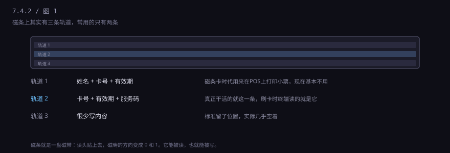
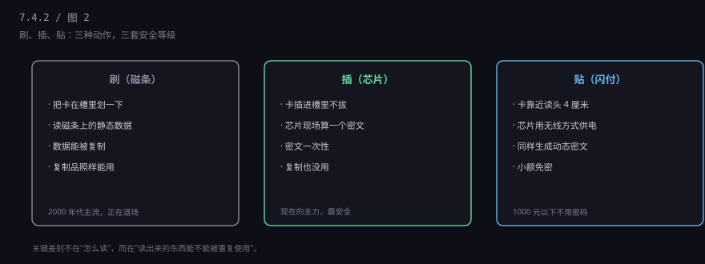
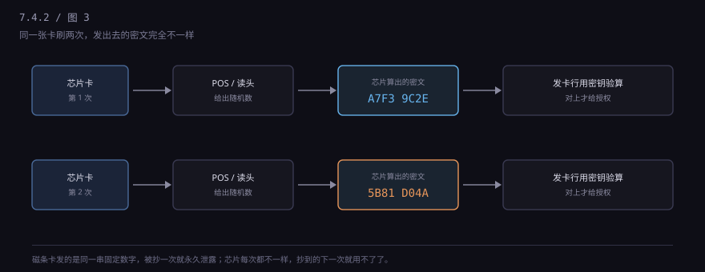

约 0.33 万字 · 3 张图 · 同一张卡，三种读法，安全等级差了一整个时代
卡背面那条黑色的、摸起来有点凸的条，就是磁条。 它和上世纪录音机里的磁带是同一种东西：表面涂了一层磁性材料， 某些位置磁化成这个方向，某些位置那个方向，方向就代表 0 和 1。
这条带子上其实划了三道"轨道"，能分别存不同格式的数据。

信息量小得可怜。轨道 2 存的东西，说白了就是卡号加有效期， 再带几个标志位。它不存密码，不存余额，也不存你是谁—— 余额在银行的数据库里，磁条只负责报出"我是哪张卡"。
为什么这么省？因为磁条本身就很挤。 一条磁条的宽度不到一厘米，能稳定记录的字符数只有几百个， 而且要留出纠错和同步用的空间。在 1960 年代的技术条件下， 这已经是极限了。
这套东西是 IBM 在 1960 年代做出来的，最早用在身份证件和门禁上， 后来被银行业接了过去。它比芯片早了四十年， 四十年里全球铺了几千万台只认磁条的设备—— 这就是为什么它到今天还没死透。
你可能遇到过一个说法："磁条卡别和手机放一起，会消磁。" 严格说，现代手机的扬声器和磁铁强度不够，很难真的消掉； 真正容易出事的是强磁铁、磁扣包、以及反复弯折。 磁条是靠磁畴排列记事的，弯折会让涂层出现微小裂纹， 读的时候信号就断了。所以卡放钱包里别跟钥匙挤在一起。
因为读写是同一套物理原理。
磁条读卡器里有个磁头，贴着条子划过去，磁畴的方向就在线圈里感应出电流， 变成 0 和 1。而写卡器做的就是反过来：把电流变成磁场，把磁畴改成你要的方向。
读写共用一套原理，意味着一件事：能读的地方，就能写。 淘宝上几十块钱的写卡器，加上一台笔记本， 就能把读到的内容原样写到一张空白卡上——业内叫"克隆卡"。
更糟的是，磁条里的数据是静态的。 卡号永远是那个卡号，有效期永远是那个有效期。 你今天在某个小店的 POS 上刷一次，明天那张克隆卡在另一个城市刷， 银行那边的数据长得一模一样，它分辨不出来。
把三种读取方式放在一起看，差别就很清楚了。

芯片就不一样了。那块金色的小方块不是存储器，是一台完整的微型计算机： 有处理器、有存储、有自己的操作系统（业内叫 COS，卡片操作系统）， 里面还埋着一把永远读不出来的密钥。
读不出来是关键。密钥可以在芯片内部参与运算，但没有任何指令能把它导出。 你想复制，就只能复制到"结果"，复制不到"能力"。
拆开看，卡上那六个小金属片是触点： 两个供电，一个接地，一个传数据，一个给时钟信号，还有一个留作备用。 插卡时 POS 机的弹片压上去，芯片就通电启动了。
芯片里跑的是一个极小的操作系统（COS）， 有自己的文件结构、命令集、访问权限。 你在 App 里看到的"余额""交易记录"，一部分就存在这个文件结构里。 它的存储是闪存，擦写次数有限（十万次量级）， 所以一张卡用了七八年、插了几万次，确实可能读不出来—— 这不是坏了，是寿命到了。
这也是为什么银行会主动给你寄新卡，而且有效期通常只给五年： 到期换卡，既是安全策略，也是产品寿命。
插进去之后，芯片和 POS 机要做一次握手，来回好几轮：
POS 先给芯片一个随机数，芯片拿自己的密钥和这个随机数算出一个密文， 发回去；POS 把密文连同交易信息一起送给发卡行，发卡行用同一把密钥的对应算法验算， 对得上才给授权。

这就是为什么插卡要等：不是网慢，是芯片在做加密运算， 而且这套交互要跑好几轮（应用选择、读记录、持卡人验证、生成密文）。 那几秒钟，是它在算。
顺带解释一个常见现象：插卡时提示"请勿拔卡"，你手快拔了， POS 会报错让你重插。因为一次交易是一个完整会话， 中途断了，密文没生成完，这单就废了。
这轮交互里还有一步叫持卡人验证：证明拿卡的人是你。 国际上主流是签名——你在小票上签个名，收银员对一下卡背面。 中国走的是另一条路：六位密码。
为什么？因为签名这东西，本质上靠收银员的眼睛， 而收银员一天看几百张单子，根本不会认真比对。 密码虽然也经常被写在卡背面（千万别这么干）， 但至少它是个可以被系统验证的东西。
密码输错三次会锁卡，这个"锁"发生在哪儿？ 不是 POS 机上，是发卡行的系统里。 POS 只是把密码的密文传上去，由银行比对。 所以你换任何一台机器输错，累计次数都算在一起。
小额免密是这套流程的例外：1000 元以下， 不用密码、不用签名，贴一下就走。 它的安全假设是"金额小，风险可控"， 代价是卡丢了以后，在你挂失之前这段时间里， 别人可以一笔一笔地刷。
闪付（QuickPass）和手机 NFC 支付，用的是同一套芯片，只是换了个通信方式： 不靠金属触点，靠 13.56 MHz 的无线电。
卡里没有电池，那它怎么工作？读卡器发出的电磁场会在卡片的天线线圈里感应出电流， 给芯片供电。它靠别人发的电活着，所以贴上去才有反应， 离开读卡器就是一张塑料片。
手机上的 Apple Pay、华为 Pay 是另一条路： 它不复制你的卡号，而是让银行发一个替身号码（token）， 这个号码只绑在这台设备上，商户拿到的是替身，不是你的真卡号。 手机丢了，远程把 token 作废就行，卡号不用换。 这是"卡号不该被复制"这个思路的极致版本。
通信距离只有几厘米，这也是为什么"隔空盗刷"在物理上很难成立—— 真要偷，得把读卡器贴到你包上，而且现在小额免密也有笔数和金额限制。
不过闪付有个现实问题：1000 元以下免密。 方便是真方便，风险也是真风险——卡丢了，别人在你挂失之前， 可以一笔一笔地刷，每笔都不超过限额。
因为最薄弱的环节决定整体安全。
一张既有芯片又有磁条的卡，如果收银员图快划了磁条，或者 POS 只支持磁条， 那这次交易的安全等级就退回磁条时代。 这个现象有个专门的名字：降级攻击（fallback）—— 攻击者想办法让终端"以为"芯片坏了，从而退回磁条通道。
所以现在的做法是两头夹：一头把磁条逐步取消（很多新卡干脆不印磁条）， 一头在终端上强制"有芯片必须插芯片"。
对你来说，最实用的一条是：能插就插，能贴就贴，别划。 划一下省两秒，省下的是你自己的安全边际。
那为什么磁条到现在还没绝迹？ 因为换设备要钱。一台支持芯片的 POS 机几百到上千， 全国几千万台，加上加油站、停车场、自动售货机、 景区闸机这些地方，换一遍是十年量级的工程。
所以你会看到一个过渡期的怪现象： 同一家店，柜台上的新机器能插卡，门口那台老机器只能刷。 这不是店家偷懒，是两批设备在不同年份买的。
最后提醒一件小事：卡被 ATM 吞了，别慌，也别信机器上贴的"故障请拨打此号码"—— 那多半是骗子贴上去的。正确做法是打银行官方客服， 或者直接进网点。吞卡通常是因为密码连错三次、 超时未取、或者机器故障，卡会被保存在机器里， 凭身份证就能领回。